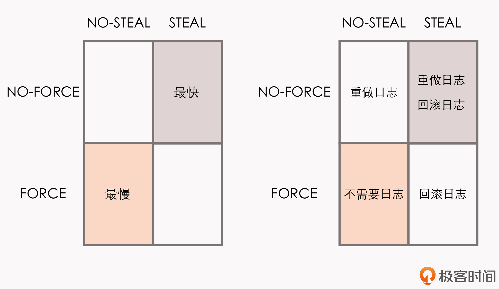

- 00 _导读 _ 什么是“The Fenix Project”？.md.html
- 00 开篇词 _ 如何构建一个可靠的分布式系统？.md.html
- 01 _ 原始分布式时代：Unix设计哲学下的服务探索.md.html
- 02 _ 单体系统时代：应用最广泛的架构风格.md.html
- 03 _ SOA时代：成功理论与失败实践.md.html
- 04 _ 微服务时代：SOA的革命者.md.html
- 05 _ 后微服务时代：跨越软件与硬件之间的界限.md.html
- 06 _ 无服务时代：“不分布式”云端系统的起点.md.html
- 07 _ 远程服务调用（上）：从本地方法到远程方法的桥梁.md.html
- 08 _ 远程服务调用（下）：如何选择适合自己的RPC框架？.md.html
- 09 _ RESTful服务（上）：从面向过程编程到面向资源编程.md.html
- 10 _ RESTful服务（下）：如何评价服务是否RESTful？.md.html
- 11 _ 本地事务如何实现原子性和持久性？.md.html
- 12 _ 本地事务如何实现隔离性？.md.html
- 13 _ 全局事务和共享事务是如何实现的？.md.html
- 14 _ 分布式事务之可靠消息队列.md.html
- 15 _ 分布式事务之TCC与SAGA.md.html
- 16 _ 域名解析系统，优化HTTP性能的第一步.md.html
- 17 _ 客户端缓存是如何帮助服务器分担流量的？.md.html
- 18 _ 传输链路，优化HTTP传输速度的小技巧.md.html
- 19 _ 如何利用内容分发网络来提高网络性能？.md.html
- 20 _ 常见的四层负载均衡的工作模式是怎样的？.md.html
- 21 _ 服务端缓存的三种属性.md.html
- 22 _ 分布式缓存如何与本地缓存配合，提高系统性能？.md.html
- 23 _ 认证：系统如何正确分辨操作用户的真实身份？.md.html
- 24 _ 授权（上）：系统如何确保授权的过程可靠？.md.html
- 25 _ 授权（下）：系统如何确保授权的结果可控？.md.html
- 26 _ 凭证：系统如何保证与用户之间的承诺是准确完整且不可抵赖的？.md.html
- 27 _ 保密：系统如何保证敏感数据无法被内外部人员窃取滥用？.md.html
- 28 _ 传输（上）：传输安全的基础，摘要、加密与签名.md.html
- 29 _ 传输（下）：数字证书与传输安全层.md.html
- 30 _ 验证：系统如何确保提交给服务的数据是安全的？.md.html
- 31 _ 分布式共识（上）：想用好分布式框架，先学会Paxos算法吧.md.html
- 32 _ 分布式共识（下）：Multi Paxos、Raft与Gossip，分布式领域的基石.md.html
- 33 _ 服务发现如何做到持续维护服务地址在动态运维中的时效性？.md.html
- 34 _ 路由凭什么作为微服务网关的基础职能？.md.html
- 35 _ 如何在客户端实现服务的负载均衡？.md.html
- 36 _ 面对程序故障，我们该做些什么？.md.html
- 37 _ 要实现某种容错策略，我们该怎么做？.md.html
- 38 _ 限流的目标与模式.md.html
- 39 _ 如何构建零信任网络安全？.md.html
- 40 _ 如何实现零信任网络下安全的服务访问？.md.html
- 41 _ 分布式架构中的可观测到底说的是什么？.md.html
- 42 _ 分析日志真的没那么简单.md.html
- 43 _ 一个完整的分布式追踪系统是什么样子的？.md.html
- 44 _ 聚合度量能给我们解决什么问题？.md.html
- 45 _ 模块导学：从微服务到云原生.md.html
- 46 _ 容器的崛起（上）：文件、访问、资源的隔离.md.html
- 47 _ 容器的崛起（下）：系统、应用、集群的封装.md.html
- 48 _ 以容器构建系统（上）：隔离与协作.md.html
- 49 _ 以容器构建系统（下）：韧性与弹性.md.html
- 50 _ 应用为中心的封装（上）：Kustomize与Helm.md.html
- 51 _ 应用为中心的封装（下）：Operator与OAM.md.html
- 52 _ Linux网络虚拟化（上）：信息是如何通过网络传输被另一个程序接收到的？.md.html
- 53 _ Linux网络虚拟化（下）：Docker所提供的容器通讯方案有哪些？.md.html
- 54 _ 容器网络与生态：与CNM竞争过后的CNI下的网络插件生态.md.html
- 55 _ 谈谈Kubernetes的存储设计理念.md.html
- 56 _ Kubernetes存储扩展架构：一个真实的存储系统如何接入或移除新存储设备？.md.html
- 57 _ Kubernetes存储生态系统：几种有代表性的CSI存储插件的实现.md.html
- 58 _ Kubernetes的资源模型与调度器设计.md.html
- 59 _ 透明通讯的涅槃（上）：通讯的成本.md.html
- 60 _ 透明通讯的涅槃（下）：控制平面与数据平面.md.html
- 61 _ 服务网格与生态：聊聊服务网格的两项标准规范.md.html
- 62 _ Fenix's Bookstore的前端工程.md.html
- 63 _ 基于Spring Boot的单体架构.md.html
- 64 _ 基于Spring Cloud的微服务架构.md.html
- 65 _ 基于Kubernetes的微服务架构.md.html
- 66 _ 基于Istio的服务网格架构.md.html
- 67 _ 基于云计算的无服务架构.md.html
- 春节特别放送（上）_ 有的放矢，事半功倍.md.html
- 春节特别放送（下）_ 积累沉淀，知行合一.md.html
- 用户故事 _ 詹应达：持续成长，不惧未来.md.html
- 结束语 _ 程序员之路.md.html
- 结课测试 _ 一套习题，测出你的掌握程度.md.html
- 捐赠
11 _ 本地事务如何实现原子性和持久性？
你好，我是周志明。
在接下来的五节课里，我们将会一起讨论软件开发中另一个常见的话题：事务处理。
事务处理几乎是每一个信息系统中都会涉及到的问题，它存在的意义就是保证系统中的数据是正确的，不同数据间不会产生矛盾，也就是保证数据状态的一致性（Consistency）。
关于一致性，我这里先做个说明。“一致性”在数据科学中有严肃定义，并且有多种细分类型的概念。这里我们重点关注的是数据库状态的一致性，它跟课程后面第三个模块“分布式的基石”当中，即将要讨论的分布式共识算法时所说的一致性，是不一样的，具体的差别我们会在第三个模块中探讨。
说回数据库状态的一致性，理论上，要达成这个目标需要三方面的共同努力：
- 原子性（Atomic）：在同一项业务处理过程中，事务保证了多个对数据的修改，要么同时成功，要么一起被撤销。
- 隔离性（Isolation）：在不同的业务处理过程中，事务保证了各自业务正在读、写的数据互相独立，不会彼此影响。
- 持久性（Durability）：事务应当保证所有被成功提交的数据修改都能够正确地被持久化，不丢失数据。
以上就是事务的“ACID”的概念提法。我自己对这种已经形成习惯的“ACID”的提法是不太认同的，因为这四种特性并不正交，A、I、D是手段，C是目的，完全是为了拼凑个单词缩写才弄到一块去，误导的弊端已经超过了易于传播的好处。所以明确了这一点，也就明确了我们今天的讨论，就是要聚焦在事务处理的A、I、D上。
那接下来，我们先来看看事务处理的场景。
事务场景
事务的概念最初是源于数据库，但今天的信息系统中，所有需要保证数据正确性（一致性）的场景下，包括但不限于数据库、缓存、事务内存、消息、队列、对象文件存储等等，都有可能会涉及到事务处理。
当一个服务只操作一个数据源的时候，通过A、I、D来获得一致性是相对容易的，但当一个服务涉及到多个不同的数据源，甚至多个不同服务同时涉及到多个不同的数据源时，这件事情就变得很困难，有时需要付出很大、甚至是不切实际的代价，因此业界探索过许多其他方案，在确保可操作的前提下获得尽可能高的一致性保障。由此，事务处理才从一个具体操作上的“编程问题”上升成一个需要仔细权衡的“架构问题”。
人们在探索这些事务方案的过程中，产生了许多新的思路和概念，有一些概念看上去并不那么直观，因此，在接下来的这几节课中，我会带着你，一起探索同一个事例在不同的事务方案中的不同处理，以此来贯穿、理顺这些概念。
场景事例
我先来给你介绍下具体的事例。
Fenix’s Bookstore是一个在线书店。一份商品成功售出，需要确保以下三件事情被正确地处理：
- 用户的账号扣减相应的商品款项；
- 商品仓库中扣减库存，将商品标识为待配送状态；
- 商家的账号增加相应的商品款项。
接下来，我将逐一介绍在“单个服务使用单个数据源”“单个服务使用多个数据源”“多个服务使用单个数据源”以及“多个服务使用多个数据源”的不同场景下，我们可以采用哪些手段来保证以上场景实例的正确性。
今天这一讲，我们先来看“单个服务使用单个数据源”，也就是本地事务场景。
本地事务
本地事务（Local Transactions）其实应该翻译成“局部事务”，才好与第13讲中要讲解的“全局事务”对应起来。不过，现在“本地事务”的译法似乎已经成为主流，我们就不去纠结名称了。
本地事务是指仅操作特定单一事务资源的、不需要“全局事务管理器”进行协调的事务。如果这个定义你现在不能理解的话，不妨暂且先放下，等学完“全局事务”这个小章节后再回过头来想想。
本地事务是最基础的一种事务处理方案，通常只适用于单个服务使用单个数据源的场景，它是直接依赖于数据源（通常是数据库系统）本身的事务能力来工作的。在程序代码层面，我们最多只能对事务接口做一层标准化的包装（如JDBC接口），并不能深入参与到事务的运作过程当中。
事务的开启、终止、提交、回滚、嵌套、设置隔离级别、乃至与应用代码贴近的传播方式，全部都要依赖底层数据库的支持，这一点与后面的14、15两讲中要介绍的XA、TCC、SAGA等主要靠应用程序代码来实现的事务，有着十分明显的区别（到时你可以跟今天所讲的内容相互对照下）。
我举个具体的例子，假设你的代码调用了JDBC中的Transaction::rollback()方法，方法的成功执行并不代表事务就已经被成功回滚，如果数据表采用引擎的是MyISAM，那rollback()方法便是一项没有意义的空操作。因此，我们要想深入地讨论本地事务，便不得不越过应用代码的层次，去了解一些数据库本身的事务实现原理，弄明白传统数据库管理系统是如何实现ACID的。
ARIES理论
如今研究事务的实现原理，必定会追溯到ARIES理论（Algorithms for Recovery and Isolation Exploiting Semantics，基于语义的恢复与隔离算法）。起这拗口的名字应该多少也有些拼凑“ARIES”这个单词的目的（跟ACID一样的恶趣味）。
虽然，我们不能说所有的数据库都实现了ARIES理论，但现代的主流关系型数据库（Oracle、Microsoft SQLServer、MySQL-InnoDB、IBM DB2、PostgreSQL，等等）在事务实现上都深受该理论的影响。
上世纪90年代，IBM Almaden研究院总结了研发原型数据库系统“IBM System R”的经验，发表了ARIES理论中最主要的三篇论文，这里先给你介绍两篇。《ARIES: A Transaction Recovery Method Supporting Fine-Granularity Locking and Partial Rollbacks Using Write-Ahead Logging》着重解决了事务的ACID三个属性中，原子性（A）和持久性（D）在算法层面上应当如何实现；而另一篇《ARIES/KVL: A Key-Value Locking Method for Concurrency Control of Multiaction Transactions Operating on B-Tree Indexes》则是现代数据库隔离性（I）奠基式的文章。
我们先从原子性和持久性说起。至于隔离性，在下一节课中我们再接着展开介绍。
实现原子性和持久性
原子性和持久性在事务里是密切相关的两个属性，原子性保证了事务的多个操作要么都生效要么都不生效，不会存在中间状态；持久性保证了一旦事务生效，就不会再因为任何原因而导致其修改的内容被撤销或丢失。
显而易见，数据必须要成功写入磁盘、磁带等持久化存储器后才能拥有持久性，只存储在内存中的数据，一旦遇到程序忽然崩溃、数据库崩溃、操作系统崩溃，机器突然断电宕机（后面我们都统称为崩溃，Crash）等情况就会丢失。实现原子性和持久性所面临的困难是，“写入磁盘”这个操作不会是原子的，不仅有“写入”与“未写入”，还客观地存在着“正在写”的中间状态。
按照上面我们列出的示例场景，从Fenix’s Bookstore购买一本书需要修改三个数据：在用户账户中减去货款、在商家账户中增加货款、在商品仓库中标记一本书为配送状态，由于写入存在中间状态，可能发生以下情形：
- 未提交事务：程序还没修改完三个数据，数据库已经将其中一个或两个数据的变动写入了磁盘，此时出现崩溃，一旦重启之后，数据库必须要有办法得知崩溃前发生过一次不完整的购物操作，将已经修改过的数据从磁盘中恢复成没有改过的样子，以保证原子性。
- 已提交事务：程序已经修改完三个数据，数据库还未将全部三个数据的变动都写入到磁盘，此时出现崩溃，一旦重启之后，数据库必须要有办法得知崩溃前发生过一次完整的购物操作，将还没来得及写入磁盘的那部分数据重新写入，以保证持久性。
这种数据恢复操作被称为崩溃恢复（Crash Recovery，也有称作Failure Recovery或Transaction Recovery）。为了能够顺利地完成崩溃恢复，在磁盘中写数据就不能像程序修改内存中变量值那样，直接改变某表某行某列的某个值，必须将修改数据这个操作所需的全部信息（比如修改什么数据、数据物理上位于哪个内存页和磁盘块中、从什么值改成什么值等等），以日志的形式（日志特指仅进行顺序追加的文件写入方式，这是最高效的写入方式）先记录到磁盘中。
只有在日志记录全部都安全落盘，见到代表事务成功提交的“Commit Record”后，数据库才会根据日志上的信息对真正的数据进行修改，修改完成后，在日志中加入一条“End Record”表示事务已完成持久化，这种事务实现方法被称为“Commit Logging”。
额外知识：Shadow Paging-
通过日志实现事务的原子性和持久性是当今的主流方案，但并非唯一的选择。除日志外，还有另外一种称为“Shadow Paging”（有中文资料翻译为“影子分页”）的事务实现机制，常用的轻量级数据库SQLite Version 3采用的就是Shadow Paging。-
Shadow Paging的大体思路是对数据的变动会写到硬盘的数据中，但并不是直接就地修改原先的数据，而是先将数据复制一份副本，保留原数据，修改副本数据。在事务过程中，被修改的数据会同时存在两份，一份修改前的数据，一份是修改后的数据，这也是“影子”（Shadow）这个名字的由来。-
当事务成功提交，所有数据的修改都成功持久化之后，最后一步要修改数据的引用指针，将引用从原数据改为新复制出来修改后的副本，最后的“修改指针”这个操作将被认为是原子操作，所以Shadow Paging也可以保证原子性和持久性。-
Shadow Paging相对简单，但涉及到隔离性与锁时，Shadow Paging实现的事务并发能力相对有限，因此在高性能的数据库中应用不多。
Commit Logging保障数据持久性、原子性的原理并不难想明白。
首先，日志一旦成功写入Commit Record，那整个事务就是成功的，即使修改数据时崩溃了，重启后根据已经写入磁盘的日志信息恢复现场、继续修改数据即可，这保证了持久性。
其次，如果日志没有写入成功就发生崩溃，系统重启后会看到一部分没有Commit Record的日志，那将这部分日志标记为回滚状态即可，整个事务就像完全没有发生过一样，这保证了原子性。
Commit Logging实现事务简单清晰，也有一些数据库就是采用Commit Logging机制来实现事务的（较具代表性的是阿里的OceanBase）。但是，Commit Logging存在一个巨大的缺陷：所有对数据的真实修改都必须发生在事务提交、日志写入了Commit Record之后，即使事务提交前磁盘I/O有足够空闲、即使某个事务修改的数据量非常庞大，占用大量的内存缓冲，无论何种理由，都决不允许在事务提交之前就开始修改磁盘上的数据，这一点对提升数据库的性能是很不利的。
为了解决这个缺陷，前面提到的ARIES理论终于可以登场了。ARIES提出了“Write-Ahead Logging”的日志改进方案，其名字里所谓的“提前写入”（Write-Ahead），就是允许在事务提交之前，提前写入变动数据的意思。
Write-Ahead Logging先将何时写入变动数据，按照事务提交时点为界，分为了FORCE和STEAL两类：
- FORCE：当事务提交后，要求变动数据必须同时完成写入则称为FORCE，如果不强制变动数据必须同时完成写入则称为NO-FORCE。现实中绝大多数数据库采用的都是NO-FORCE策略，只要有了日志，变动数据随时可以持久化，从优化磁盘I/O性能考虑，没有必要强制数据写入立即进行。
- STEAL：在事务提交前，允许变动数据提前写入则称为STEAL，不允许则称为NO-STEAL。从优化磁盘I/O性能考虑，允许数据提前写入，有利于利用空闲I/O资源，也有利于节省数据库缓存区的内存。
Commit Logging允许NO-FORCE，但不允许STEAL。因为假如事务提交前就有部分变动数据写入磁盘，那一旦事务要回滚，或者发生了崩溃，这些提前写入的变动数据就都成了错误。
Write-Ahead Logging允许NO-FORCE，也允许STEAL，它给出的解决办法是增加了另一种称为Undo Log的日志。当变动数据写入磁盘前，必须先记录Undo Log，写明修改哪个位置的数据、从什么值改成什么值，以便在事务回滚或者崩溃恢复时，根据Undo Log对提前写入的数据变动进行擦除。
Undo Log现在一般被翻译为“回滚日志”，此前记录的用于崩溃恢复时重演数据变动的日志，就相应被命名为Redo Log，一般翻译为“重做日志”。
由于Undo Log的加入，Write-Ahead Logging在崩溃恢复时，会以此经历以下三个阶段：
- 分析阶段（Analysis）：该阶段从最后一次检查点（Checkpoint，可理解为在这个点之前所有应该持久化的变动都已安全落盘）开始扫描日志，找出所有没有End Record的事务，组成待恢复的事务集合（一般包括Transaction Table和Dirty Page Table）。
- 重做阶段（Redo）：该阶段依据分析阶段中，产生的待恢复的事务集合来重演历史（Repeat History），找出所有包含Commit Record的日志，将它们写入磁盘，写入完成后增加一条End Record，然后移除出待恢复事务集合。
- 回滚阶段（Undo）：该阶段处理经过分析、重做阶段后剩余的恢复事务集合，此时剩下的都是需要回滚的事务（被称为Loser），根据Undo Log中的信息回滚这些事务。
重做阶段和回滚阶段的操作都应该设计为幂等的。而为了追求高性能，以上三个阶段都无可避免地会涉及到非常繁琐的概念和细节（如Redo Log、Undo Log的具体数据结构等），这里我们就不展开讲了，如果想要继续学习，前面讲到的那两篇论文就是学习的最佳途径。
Write-Ahead Logging是ARIES理论的一部分，整套ARIES拥有严谨、高性能等很多的优点，但这些也是以复杂性为代价的。
数据库按照“是否允许FORCE和STEAL”可以产生四种组合，从优化磁盘I/O的角度看，NO-FORCE加STEAL组合的性能无疑是最高的；从算法实现与日志的角度看，NO-FORCE加STEAL组合的复杂度无疑是最高的。
这四种组合与Undo Log、Redo Log之间的具体关系如下图所示：

小结
今天这节课，我们学习了经典ARIES理论下实现本地事务中原子性与持久性的方法。通过写入日志来保证原子性和持久性是业界的主流做法，这个做法最困难的一点，就是如何处理日志“写入中”的中间状态，才能既保证严谨，也能够高效。
ARIES理论提出了Write-Ahead Logging式的日志写入方法，通过分析、重做、回滚三个阶段实现了STEAL、NO-FORCE，从而实现了既高效又严谨的日志记录与故障恢复。
一课一思
为什么Logging会成为实现原子性、持久性的主流做法？Shadow Paging等其他方法的不足之处是什么？
欢迎在留言区分享你的见解。如果你身边的朋友，也对实现本地事务中原子性与持久性的方法感兴趣，欢迎你把今天的内容分享给TA，我们一起交流探讨。
好，感谢你的阅读，我们下一讲再见。
© 2019 - 2023 Liangliang Lee. Powered by gin and hexo-theme-book.